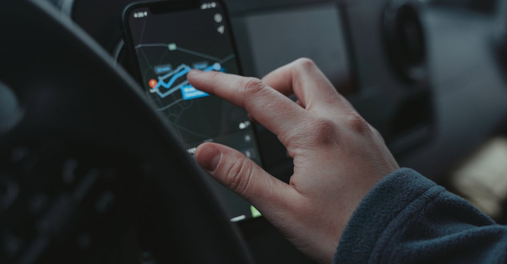

Lyft s'étend à l'international : le rachat de Gett UK officialisé
Dans un mouvement stratégique qui redessine les contours du marché du transport urbain, Lyft Inc. a annoncé l'acquisition de l'activité britannique de Gett, une application de réservation de taxis londoniens, plus connue pour ses emblématiques "black cabs". Cette transaction marque la troisième expansion internationale majeure de Lyft au cours de la dernière année, témoignant d'une volonté affirmée de dépasser les frontières traditionnelles du marché américain. Le montant de l'opération, bien que non divulgué dans le détail, est estimé à plusieurs dizaines de millions de dollars, reflétant l'importance de ce coup de poker pour le géant américain du VTC. L'objectif est clair : consolider sa position sur un marché mondialisé et diversifier ses sources de revenus face à une concurrence toujours plus vive. Cet investissement n'est pas anodin ; il s'inscrit dans une logique d'expansion agressive, visant à capter une nouvelle clientèle et à intégrer des réseaux de transport locaux déjà établis. La décision de cibler spécifiquement le marché britannique, avec ses spécificités réglementaires et culturelles, suggère une approche réfléchie et une analyse approfondie des opportunités. L'intégration des services de Gett pourrait permettre à Lyft de proposer une offre plus complète, allant au-delà des VTC classiques pour inclure les taxis traditionnels, un segment encore très prisé dans certaines métropoles. Cette démarche soulève des questions sur l'avenir des acteurs locaux et la concentration du marché.
👉 À lire : Météo-Crime et Crypto : Quand la Donnée Déraille, l'IA Veille

Une stratégie d'expansion internationale audacieuse
L'acquisition de Gett UK par Lyft n'est pas un acte isolé, mais s'inscrit dans une stratégie d'expansion internationale bien orchestrée. Après des incursions au Canada et en Australie, ce mouvement vers le Royaume-Uni témoigne d'une ambition globale. Les motivations derrière cette politique sont multiples. D'une part, il s'agit de réduire la dépendance au marché nord-américain, souvent sujet à des fluctuations réglementaires et à une concurrence intense. D'autre part, Lyft cherche à capitaliser sur la force de sa marque et de sa technologie en l'adaptant à de nouveaux contextes. Le choix de Gett, une entreprise reconnue pour son réseau de chauffeurs de taxi traditionnels, est particulièrement intéressant. Il permet à Lyft de toucher une clientèle différente, potentiellement plus sensible aux services de qualité et à la fiabilité des "black cabs", tout en complétant son offre existante. Cette diversification est cruciale dans un secteur où l'innovation est constante et où les modèles économiques doivent sans cesse s'adapter. L'intégration de Gett pourrait également offrir des synergies technologiques, par exemple dans l'optimisation des itinéraires ou la gestion de la flotte. Comme le dirait un analyste financier fictif : "Lyft ne se contente plus de jouer sur son terrain ; il cherche désormais à conquérir de nouveaux territoires en s'associant à des acteurs locaux forts." Cette approche, bien que coûteuse, est souvent la plus efficace pour pénétrer rapidement des marchés complexes. L'enjeu est de taille : devenir un acteur incontournable du transport mondial.
👉 À lire : L'IA, bulle ou révolution ? Core Scientific lève 3,3 Mds $ pour l'avenir.
Impact sur le marché du transport et les concurrents
Cette acquisition a des répercussions significatives sur l'écosystème du transport, tant au Royaume-Uni qu'à l'échelle mondiale. Pour Lyft, c'est une opportunité de renforcer sa présence et de se différencier de ses concurrents directs, notamment Uber, qui opère déjà fortement sur le marché britannique. En intégrant Gett, Lyft ne se contente pas d'ajouter des chauffeurs à sa plateforme, mais acquiert une marque reconnue et un réseau établi de taxis traditionnels. Cela pourrait lui permettre de capter une part de marché supplémentaire, notamment auprès des clients professionnels et des touristes qui privilégient souvent les taxis noirs londoniens pour leur fiabilité et leur image iconique. Pour Gett, cette vente représente une porte de sortie stratégique et une opportunité de se concentrer sur d'autres marchés ou services, bien que les détails de leurs futurs plans restent à clarifier. Les concurrents de Lyft, qu'il s'agisse d'Uber ou d'autres acteurs locaux, devront probablement revoir leurs stratégies pour contrer cette nouvelle donne. La consolidation du marché s'accélère, et les entreprises qui ne parviennent pas à s'adapter ou à former des alliances pourraient se retrouver marginalisées. L'enjeu pour tous est de proposer une offre de mobilité intégrée, répondant aux besoins variés des citadins. L'intégration technologique sera clé : comment Lyft parviendra-t-elle à fusionner ses propres systèmes avec ceux de Gett pour offrir une expérience utilisateur fluide et efficace ? C'est un défi majeur qui déterminera le succès à long terme de cette opération.
Les parallèles avec l'IA et le trading algorithmique
Bien que le secteur du transport et celui du trading de cryptomonnaies semblent éloignés, des parallèles intéressants peuvent être tracés, notamment concernant l'utilisation de l'intelligence artificielle et des algorithmes. Tout comme Lyft cherche à optimiser ses opérations et à anticiper les besoins de ses clients grâce à la technologie, les plateformes de trading basées sur l'IA, comme celle promue par CryptoMind AI, visent à analyser des marchés financiers complexes en temps réel. L'IA est utilisée pour identifier des tendances, prédire les mouvements de prix et exécuter des transactions de manière autonome, 24h/24. L'acquisition de Gett par Lyft peut être vue comme une stratégie d'expansion basée sur l'analyse de données et l'anticipation des opportunités de marché. De même, un agent IA en trading crypto analyse constamment une multitude de données – prix, volumes, actualités, sentiment du marché – pour prendre des décisions d'investissement éclairées. L'objectif est similaire : maximiser les retours tout en minimisant les risques, grâce à une capacité d'analyse et de réaction bien supérieure à celle d'un humain. L'automatisation des processus, qu'il s'agisse de réserver un taxi ou d'acheter une cryptomonnaie, est une tendance de fond. Les entreprises qui maîtrisent ces technologies et savent les appliquer à des stratégies d'expansion ou d'investissement sont celles qui se positionnent pour l'avenir. L'efficacité opérationnelle et la capacité à s'adapter rapidement aux changements du marché sont des facteurs clés de succès, que ce soit dans la mobilité urbaine ou dans la finance décentralisée.
L'importance de l'IA dans la prise de décision stratégique
Dans le monde des affaires moderne, la prise de décision stratégique repose de plus en plus sur l'analyse de données massives et l'intelligence artificielle. L'acquisition de Gett par Lyft illustre parfaitement cette tendance. Lyft a probablement utilisé des modèles prédictifs et des analyses de marché basées sur l'IA pour évaluer la pertinence et la rentabilité potentielle de cette opération. L'IA permet d'identifier des schémas complexes, de modéliser des scénarios futurs et d'évaluer les risques avec une précision accrue. Pour les entreprises comme Lyft, qui évoluent dans des environnements très concurrentiels et dynamiques, cette capacité d'analyse est un avantage décisif. Il ne s'agit plus seulement de réagir aux événements, mais de les anticiper. Dans le domaine du trading de cryptomonnaies, l'IA joue un rôle encore plus central. Les agents de trading autonomes de CryptoMind AI, par exemple, exploitent la puissance de l'intelligence artificielle pour naviguer dans la volatilité extrême des marchés crypto. Ils analysent des milliers de points de données par seconde, identifient des opportunités d'arbitrage, et exécutent des transactions à une vitesse fulgurante, bien au-delà des capacités humaines. Cette approche algorithmique permet de tirer parti des inefficiences du marché et de générer des profits constants, 24h sur 24. L'IA n'est donc plus un simple outil, mais un véritable partenaire stratégique, capable de transformer radicalement la manière dont les entreprises opèrent et investissent, que ce soit dans le transport ou dans la finance.

Perspectives d'avenir et le rôle de la technologie
L'acquisition de Gett par Lyft n'est qu'un exemple de la convergence croissante entre technologie et secteurs traditionnels. L'avenir de la mobilité urbaine, tout comme celui de la finance, sera profondément façonné par l'innovation technologique et l'intelligence artificielle. Pour Lyft, l'intégration de Gett est une étape vers une offre de mobilité plus complète et intégrée, potentiellement gérée par des systèmes intelligents capables d'optimiser la disponibilité des véhicules, les itinéraires et les prix en temps réel. On peut imaginer des flottes de véhicules autonomes gérées par IA, ou des plateformes proposant une combinaison de VTC, taxis, et autres modes de transport, le tout orchestré par des algorithmes sophistiqués. La capacité à collecter, analyser et agir sur d'énormes volumes de données sera déterminante. Dans le monde de la finance, et plus spécifiquement du trading crypto, cette tendance est encore plus marquée. Les agents IA comme ceux développés par CryptoMind AI représentent la nouvelle génération d'outils d'investissement. Ils promettent une gestion de portefeuille plus efficace, une meilleure gestion des risques et, surtout, la possibilité de générer des rendements constants, même dans un marché aussi imprévisible que celui des cryptomonnaies. L'automatisation et l'intelligence artificielle ne sont plus des concepts futuristes, mais des réalités qui transforment activement les industries. Les entreprises et les investisseurs qui sauront tirer parti de ces avancées technologiques seront ceux qui prospéreront dans les années à venir. Le défi est d'embrasser cette transformation et de l'utiliser comme un levier de croissance et de performance.
Conclusion
En conclusion, le rachat de Gett UK par Lyft est bien plus qu'une simple transaction commerciale ; c'est le reflet d'une stratégie d'expansion internationale ambitieuse, portée par la technologie et l'analyse de données. Cette opération souligne la dynamique de consolidation dans le secteur du transport et la nécessité pour les acteurs de se réinventer constamment. Les parallèles avec le monde du trading crypto, où l'intelligence artificielle révolutionne déjà les approches d'investissement, sont frappants. Que ce soit pour optimiser la mobilité urbaine ou pour naviguer sur les marchés financiers volatils, l'IA offre des outils puissants pour anticiper, analyser et agir avec une efficacité sans précédent. Pour les investisseurs et les entreprises, comprendre et intégrer ces avancées technologiques est désormais essentiel pour assurer leur pérennité et leur croissance. L'avenir appartient à ceux qui sauront allier vision stratégique et maîtrise des outils d'intelligence artificielle, que ce soit pour conquérir de nouveaux marchés ou pour générer des profits sur les marchés financiers, 24h/24.